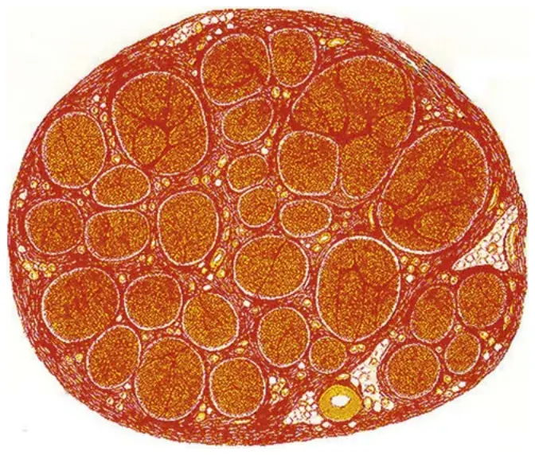

نسخه استخراجشده؛ ترجمه یا تأیید علمی انجام نشده است. وضعیت: captured
سه دقیقه پس از بلاک عصب آلوئولار تحتانی (IANB)، تزریقی کنار عصب که دندانهای فک پایین همان سمت را بیحس میکند، خانمی ۳۰ ساله میگوید لب و نیمهی زبانش کرخت است. مولر اول را بیدرد تراش میدهی، ولی وقتی سراغ کانین همان سمت میروی، درد دارد. لب بیحس است؛ پس چرا کانین نه؟

عصب آلوئولار تحتانی تنهای از چند دستهی فیبر (فاسیکل) است. محلول بیرون عصب خالی میشود و در جهت شیب غلظت به درون نفوذ میکند.
در این راه، مایع بافتی دارو را رقیق میکند و مویرگها و لنفاتیکها بخشی از آن را میبرند. پس ممکن است بافت نرم کاملاً بیحس باشد و پالپ هنوز نه؛ لب کرخت یعنی دارو به عصب رسیده، نه اینکه همهی فیبرهای درون آن بلاک شدهاند. این همان نظریهی هستهی مرکزی (central core) است.
بلاک کامل حجم و غلظت کافی میخواهد، ولی در هیچ بلاکی، حتی بسیار موفق، ۱۰۰٪ فیبرها بلاک نمیشوند.
برگشت از بلاک همان الگوی نفوذ را وارونه طی میکند. غلظت دارو بیرون عصب با پخش شدن و جذب رگها کم میشود و دارو از عصب بیرون میآید. فیبرهای مرکزی زودتر از همه بیحسی را از دست میدهند و فیبرهای سطحی دیرتر از همه. برگشت کندتر از شروع است، چون دارو به گیرندهاش در کانال سدیم چسبیده است.
هرچه خونرسانی محل کمتر، بیحسی طولانیتر؛ برای همین بلاک گاو-گیتس، بلاک دیگری از فک پایین که دارو را بالاتر و کنار گردن کندیل میگذارد، از IANB طولانیتر است. تنگکنندهی رگ، مثل اپینفرین که به بیشتر کارپولها (شیشههای آمادهی دارو) افزودهاند، هم با کم کردن خونرسانی، بلاک را طولانیتر میکند.
نکتهی طلایی: اگر کار از مدت بیحسی طولانیتر میشود، پیش از آنکه درد برگردد دوباره تزریق کن.